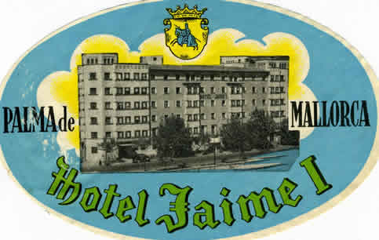
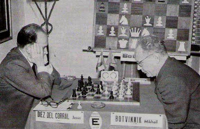
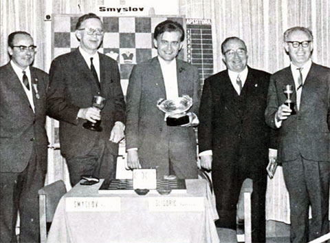
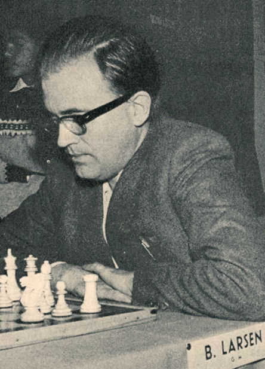

| Jan van Reek |
Pgn Chess tournaments in Palma de Mallorca Cb-file chess tournaments in Palma de Mallorca
An annual international chess tournament happened in Palma de Mallorca,
the birthplace of Arturo Pomar. The first installment lasted from 15
until 23 xi 1965. Ten men participated in a modest field. Pomar
Salamanca won on tie-break.
The second Palma de Mallorca tournament had a
much larger budget. Sponsors were Hotel Jaime I, Palma tourist
industry, Spanish chess federation and Asociacion de la Prenza.
Director was Jorge Puig Laborda and the arbiter Harry de Graaf.
Sixteen strong players participated from 27 xi until 16 xii 1966. A
race between Tal and Pomar Salamanca developed. Tal won.
The third Palma de Mallorca tournament was
played at Palma and Ciutadella de Menorca from 27 xi until 17 xii
1967. 18 great players took part. Larsen won ahead of Botvinnik and
Smyslov after an exciting competition.
The fourth Palma de Mallorca tournament was
played in Hotel Jaime I from 24 xi until 14 xii 1968. Stars among
the 18 participants were: Petrosian the world champion, Spassky his
challenger, Kortschnoj runner-up of the Candidates' final and Larsen
the previous winner. Sponsors were the Council of Palma, the tourist
office and the Spanish chess federation. Viktor Kortschnoj won after an
impressive
race.
The fifth Palma de Mallorca tournament was
opened in the town hall of Palma on 21 xi and played in Hotel Jaime
I from 22 xi until 13 xii 1969. Stars among the 18 participants
were: Spassky new world champion, Petrosian former champ,
Kortschnoj last winner and Larsen winner in 1967. Sponsors were the
city of Palma and the Spanish press. Larsen started with two losses.
Later he passed by Petrosian and Bent triumphed in the tournament for
the second time.
 |
 |  | |
| Arturo Pomar Salamanca | Label of Hotel Jaime I | Diez del Corral and
Botvinnik in 1967 They have made fifteen moves |
The sixth Palma de Mallorca tournament was played in Hotel Jaime I from 29 xi until 18 xii 1971. The number of participants was reduced to 16 and the Soviet stars preferred a Moscow event. Sponsor was the city of Palma. Larsen was the star, but he failed. Ljubojevic and Panno ended at the first place after a long race. Ljubojevic won on tie-break.
The seventh Palma de Mallorca tournament was
played in Hotel Jaime I from 27 xi until 16 xii 1972. The number of
participants remained 16. Soviet stars were Kortschnoj, Polugaevsky
and Averbakh. It would become the last great chess tournament in
Palma de Mallorca. Panno, Smejkal and Kortschnoj ended at the first
place. Panno won on tie-break.
Number eight in the series of tournaments
became Madrid 1973. Karpov won.
|  |  |
 |
| Smyslov, Larsen, Botvinnik and two main organizers in 1967 | Bent Larsen in 1969 | Oscar Panno, winner in 1972 |
Pgn Interzonal Palma de Mallorca 1970
 |
Go to home page |